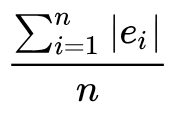

Project Checkpoint 3: New Methodologies
STAT 244
Project Checkpoint 3: New Methodologies
- Due date: Thursday, May 1st @ 11:59 pm (You may use a 48 hour extension)
In this checkpoint, you’ll practice implementing the machine learning techniques you’ve been exposed to throughout this course.
Use the ideas and techniques we’ve discussed in class to best answer the following questions. Do your best to answer in complete, thoughtful, and concise sentences. The more work you do here, the less work you have to do for your final paper. My intent is that 100% of the content in your paper and presentation comes from these project checkpoints. These checkpoints are graded based on (perceived) genuine effort rather than correctness.
If you are working in a group, while your group will submit only one final paper, each person must submit an individual project checkpoint (even if the checkpoints are identical). I will provide feedback on one person’s project checkpoints per group.
Create a Quarto file to answer the following questions. Do not answer simply using a Google Doc. You are required to do the section on Cross Validation (CV). You may then choose any of the following sections after that.
Table of Contents
Cross Validation (CV) — Required
Option: Variable Subset Selection
Option: LASSO
Option: Unsupervised Learning with K-Means Clustering
Cross Validation (CV) — Required
Resources:
Section 5.1 in ISLR
Write a brief introduction to cross validation which includes relevant mathematical notation.
Cross validation is a method of training and testing statistical models for a dataset that does not come with a training data set. It is notated by the formula: E[Y|X] = β0 + β1X1+…+ βpXp, where Y is a random variable representing our outcome data, X is a random variable representing our input data, and E[Y|X] is the expected value of Y given input data X.
What is the goal of cross-validation? (Hint: Think about over-fitting, along with social/ethical considerations)
The goal of cross-validation is to avoid overfitting, which is when a model constructed from a data set is so specific to that data that it cannot process any new data in the manner intended. This can cause problems if the training dataset has some bias, as it will reinforce that bias.What linear models are you considering based on your research question? Pick at least two models to compare.
I am considering the three models:
E[Earnings_median_5yr | Debt_median] = β0+ β1(Debt_median)
E[Earnings_median_5yr | Earnings_median_1yr - Debt_median] = β0 - β1(Debt_median) + β2(Earnings_median_1yr)
E[Earnings_median_5yr | Earnings_median_1yr] = β0+ β1(Earnings_median_1yr)
Explain how you divided your data into its test set and training set.
I divided my data into its test set and training set using 10-Fold CV.
State which error metric you are using (MAE or MSE) and give its formal mathematical definition. Why did you choose this error metric? What are the advantages/disadvantages of using it?
I chose MAE because my dataset includes outliers, and MAE uses the difference between the number the model predicts and the actual value of the testing data set in order to calculate the mean error. The formal definition of MAE is
Implement k-fold cross validation for k = 10.
Done
Display evaluation metrics for your different models in a clean, organized way. This display should include both the estimated CV metric as well as its standard deviation.
Model 10-Fold CV MAE SD 1 7.663614e+03 231.69329447 2 7.802707e+03 322.35471344 3 7.802707e+03 264.87574093
Try different values of k (the tuning parameter). At minimum, try k = n - 1 (LOOCV), and k = 5. Which value of k has the smallest CV error?
k=5 has the smallest error
Select your final model based on which one has the smallest CV error.
Model 1 with k = 10 has the smallest CV error.
Option: Variable Subset Selection
Resources:
Identify at least p = 3 predictors for modeling the expected response E(Y) of one of your variables Y.
Predictors: Major, School Type, Earnings_Median_1yr, Debt
State which error metric you are using (i.e., CV MAE or CV MSE and state the chosen k-value).
CVMAE with k=10
Best subset selection: Only implement this if you have under 100 rows/observations in your data set. Otherwise, skip this! It will be too computationally expensive!
I currently have 239 rows, so I skipped this.
Backward subset selection: Implement backward subset selection by starting with at least p = 3 predictors.
Done
We have to pick a value for our tuning parameter (the number of predictors). Plot your cross validated error as a function of the number of predictors, where each model has predictors chosen based on your backward subset selection.
Could not figure out how to do this but, my model narrowed down until both Earnings_median_1yr and Debt were left, but both had the same p-value (0). Would have to try another type of variable subse4t to narrow down further, or keep both.
Based on your plot, which model do you pick?
Based on my plot, I should pick a model that uses both Earnings_median_1yr, and Debt.
Why is backward subset selection a greedy algorithm? Answer in 1 - 3 sentences.
Backward subset selection is a greedy algorithm because it takes out whichever variable changes the predicted value the most in each step.